eat
tomatoes!
| 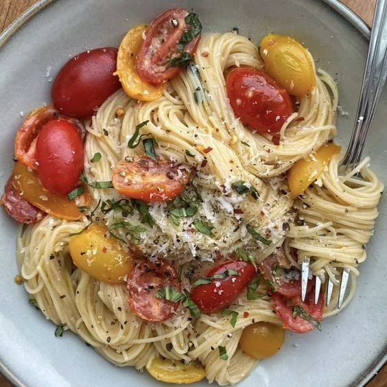 | 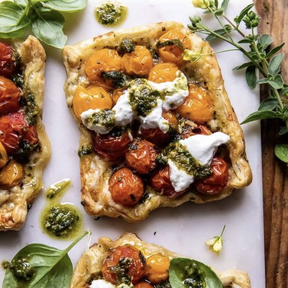 |  |
| 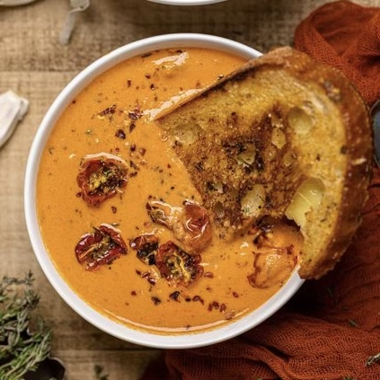 |  |
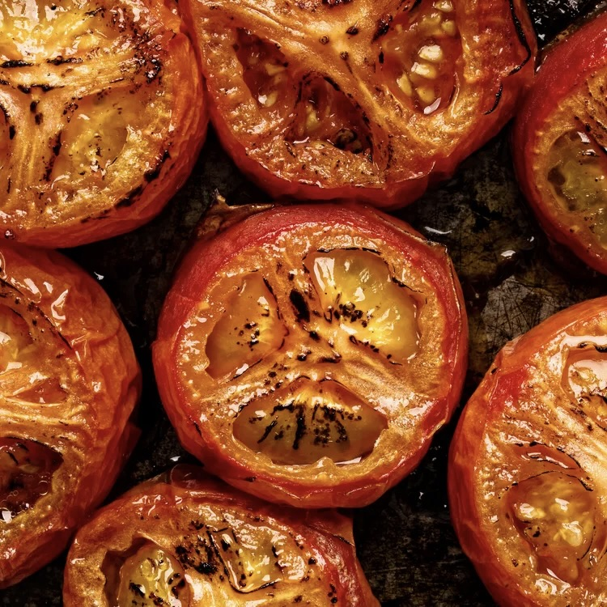 |
tomato tart!
1. cut puff pastry
2. put tomatoes and feta on a tray
3. cover with puff pastry
4. bake
5. flip
6. eat!
caprese!
1. slice big tomatoes
2. slice mozzarella balls
3. plate
4. dress with olive oil, basalmic, & basil
5. eat!
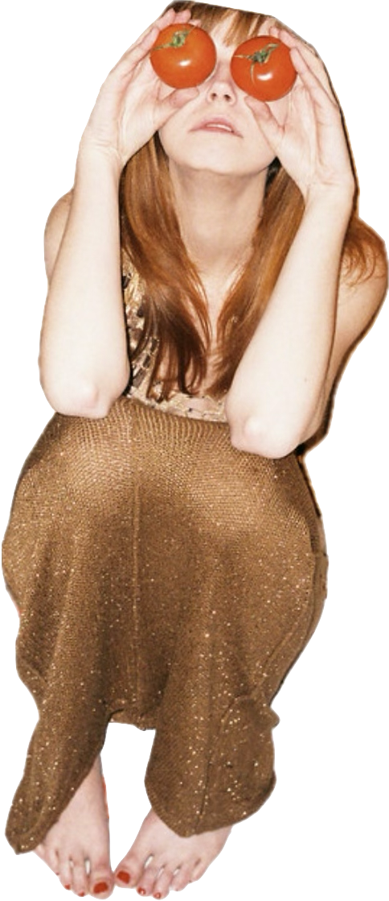

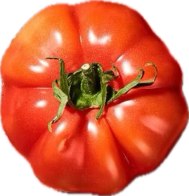
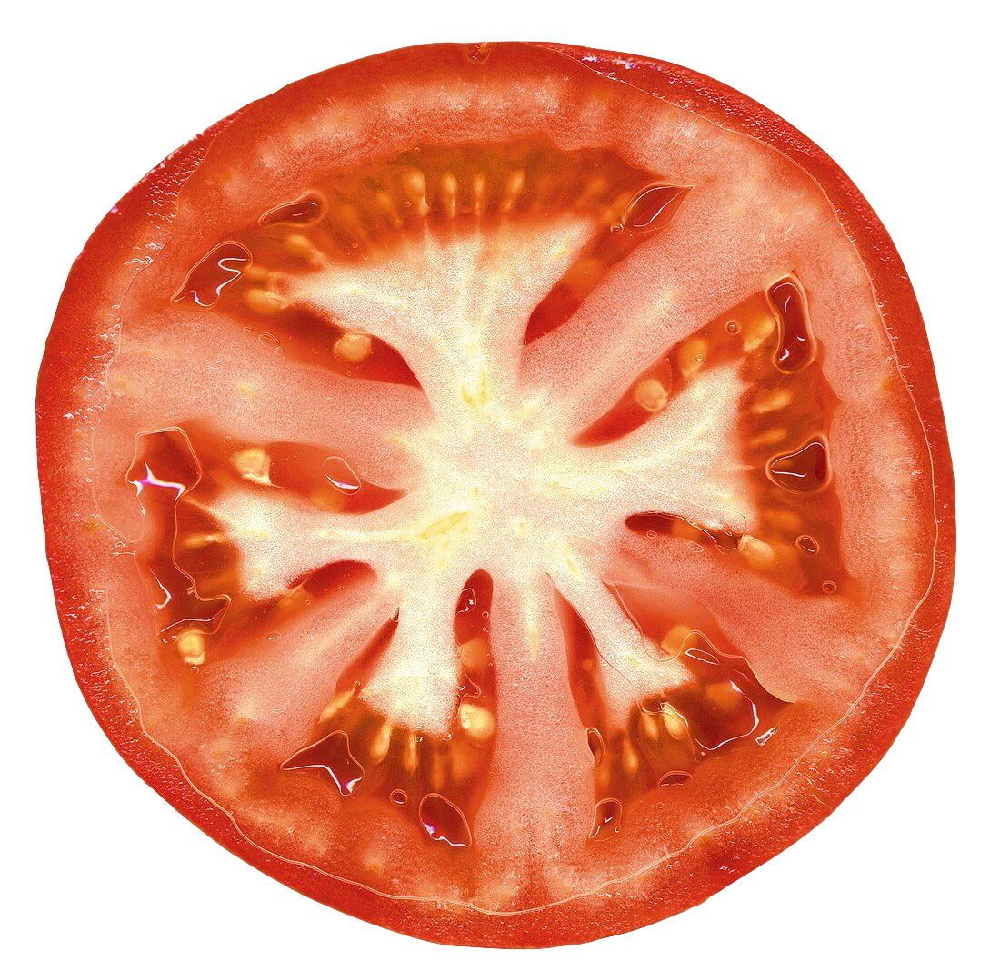
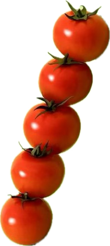
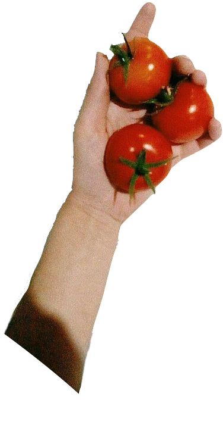
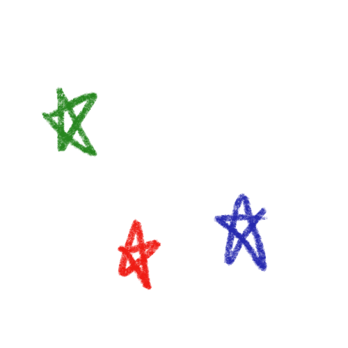
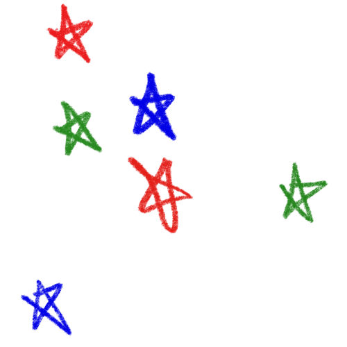
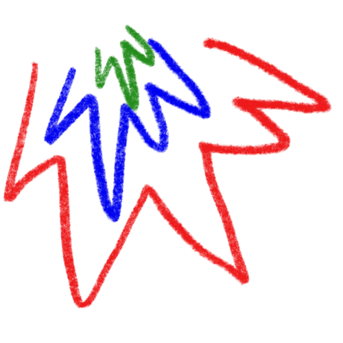